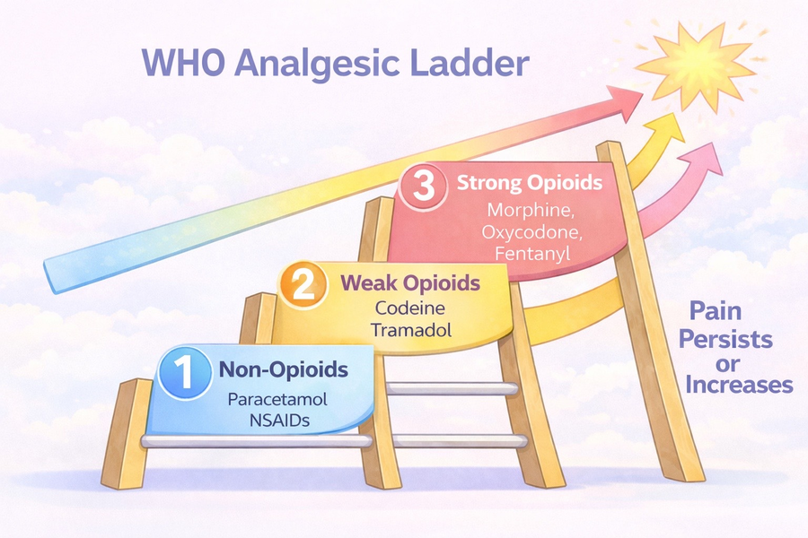
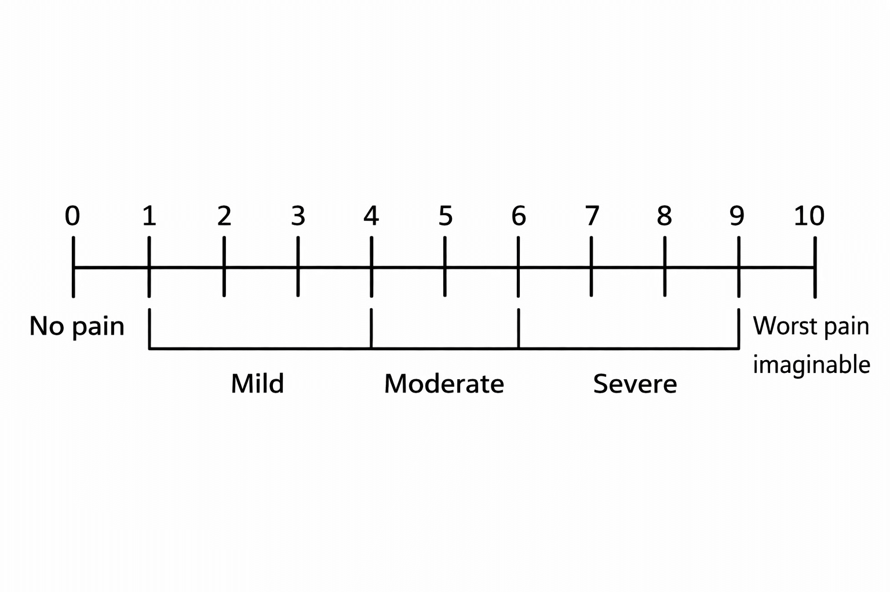
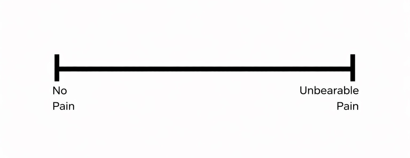
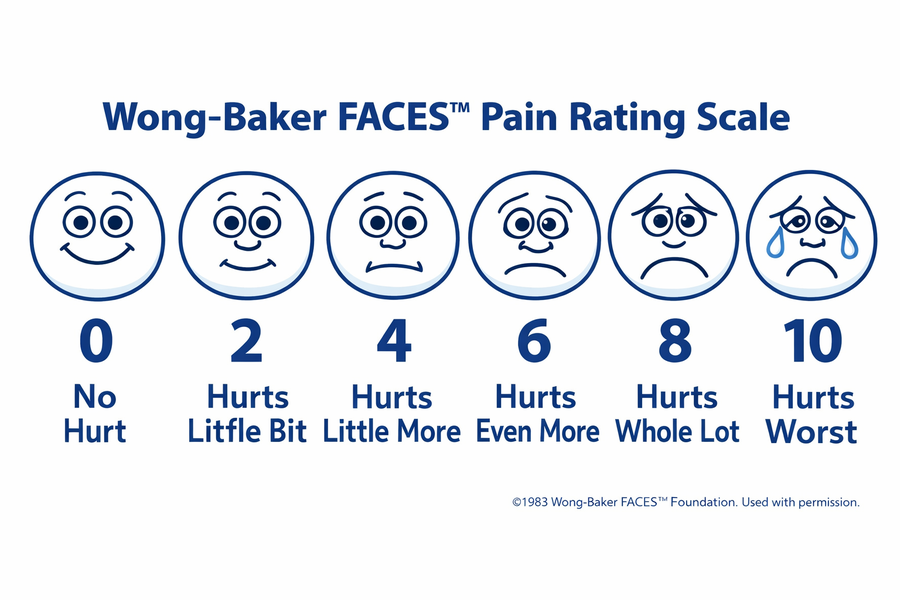
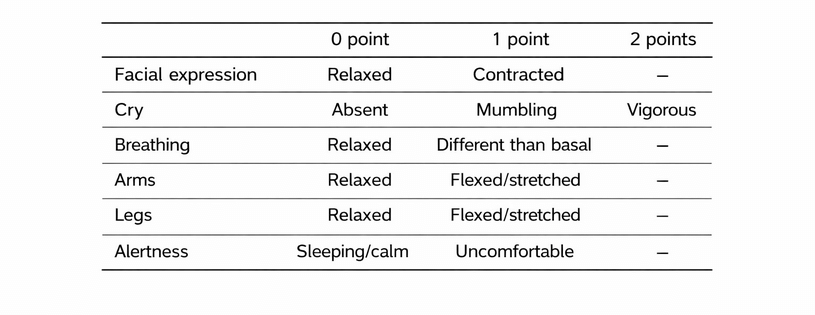
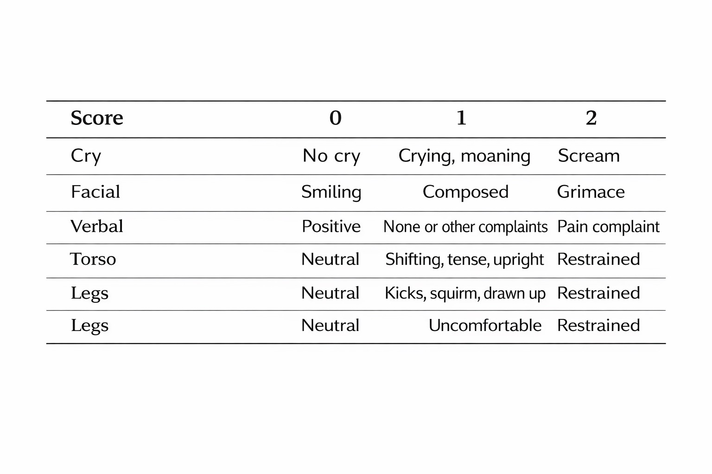
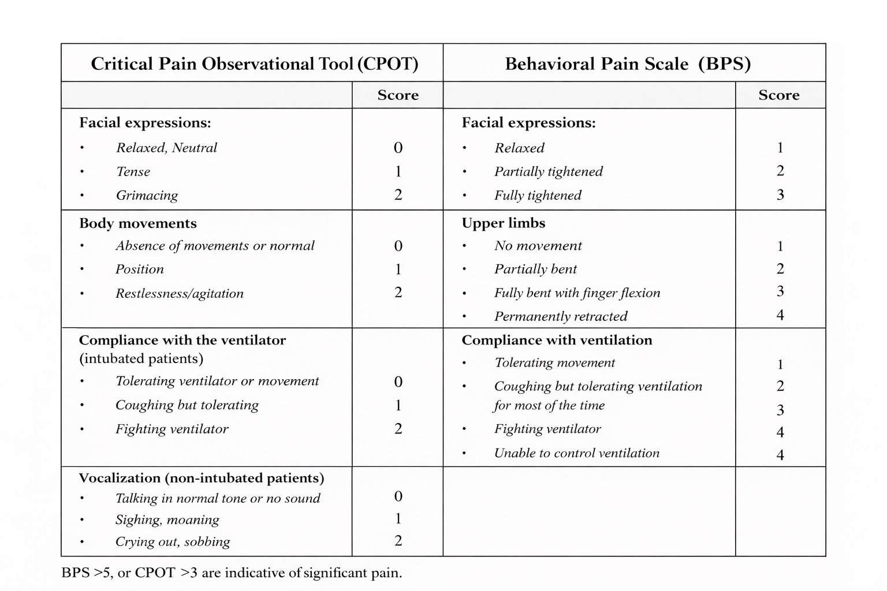
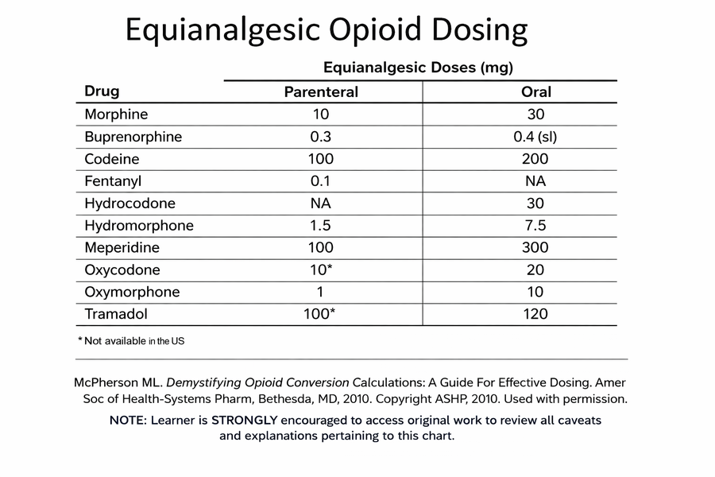
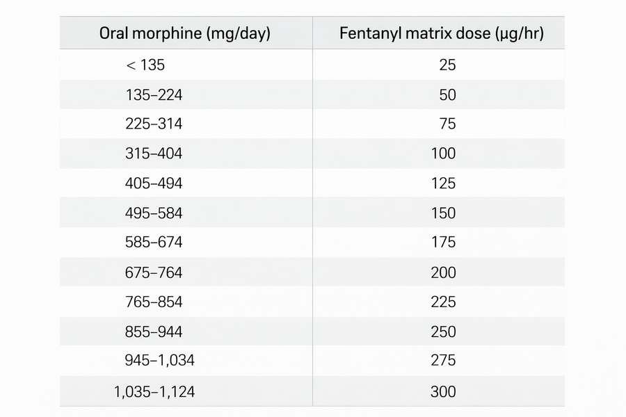

WHO Analgesic Ladder
Step 1: Mild (Para/NSAIDs)
Step 2: Moderate (Weak Opioids)
Step 3: Severe (Strong Opioids)

A. Able to Self-Report (บอกเองได้)
1. Numerical Rating Scale (NRS)

2. Verbal & VAS

B. Unable to Self-Report (บอกเองไม่ได้)
1. Wong-Baker FACES

2. NIPS (เด็กแรกเกิด - 1 ปี)

3. CHEOPS (เด็ก 1-6 ปี)

4. ผู้ป่วยวิกฤต (ICU)

Sedation Score
| 0 | ตื่นดี Alert |
| 1 | ง่วงบางครั้ง |
| 2 | หลับ ปลุกตื่นง่าย (ลด dose 25-50%) |
| 3 | หลับ ปลุกตื่นยาก (หยุดยา + Naloxone) |
Opioid Converter
*กรณี Fentanyl Patch ใส่หน่วย mcg/hr
ตารางอ้างอิง


1. ข้อมูลผู้ป่วย
0 (No Pain)
2. ตรวจสอบค่าไต (Renal Check)
3. แนะนำการรักษา (Step 3: Severe Pain)
4. จ่ายยา (Dispensing)
ข้อมูลและคำแนะนำ (Resources)
🚑 Naloxone Protocol (แก้พิษ Opioid)
ข้อบ่งชี้: Sedation Score 3 (ปลุกไม่ตื่น), RR < 8/min, Pinpoint pupils
วิธีผสม (Dilution):
Naloxone 1 amp (0.4 mg) + NSS 9 ml
= 10 ml (0.04 mg/ml)
วิธีบริหารยา (Administration):
IV 1-2 ml (0.04-0.08 mg) ทุก 2-3 นาที
*สังเกตอาการจนกว่าจะตื่นและหายใจได้เอง (Target RR > 10)
🧠 Adjuvant Analgesics (ยาแก้ปวดเสริม)
| กลุ่มยา | ตัวยา | ขนาดเริ่มต้น |
|---|---|---|
| Anticonvulsant (Neuropathic) | Gabapentin Pregabalin | 300 mg hs 75 mg hs |
| TCA (Neuropathic) | Amitriptyline Nortriptyline | 10-25 mg hs 10-25 mg hs |
| Steroid (Bone/Liver/ICP) | Dexamethasone | 4-8 mg OD/BID |
| Antispasmodic (Colic) | Hyoscine | 10 mg q 6-8h |
💩 Bowel Regimen (ป้องกันท้องผูก)
ควรสั่งจ่ายคู่กับ Opioids เสมอ
- Stimulant: Senokot 2 tabs hs หรือ Bisacodyl 5-10 mg hs
- Osmotic: MOM 30 ml hs หรือ Lactulose 15-30 ml hs
- *แนะนำให้ดื่มน้ำมากๆ และทานผักผลไม้
คำแนะนำผู้ป่วย (Counseling)
- คลื่นไส้/อาเจียน: มักเป็นแค่ 3-5 วันแรกที่เริ่มยา อาการจะค่อยๆ ดีขึ้นเอง หากมีอาการมากให้ทาน Metoclopramide หรือ Domperidone ก่อนอาหาร
- ง่วงซึม: มักพบในช่วงแรกของการปรับยา ควรระวังการลุกเดิน ห้ามขับรถหรือทำงานกับเครื่องจักร
- แผ่นแปะ Fentanyl: ห้ามตัดแผ่น, ห้ามโดนความร้อนจัด (กระเป๋าน้ำร้อน/ซาวน่า), แปะผิวหนังที่แห้งไม่มีขน เปลี่ยนแผ่นใหม่ทุก 72 ชั่วโมง (3 วัน) หากแผ่นหลุดให้แปะแผ่นใหม่ทันที
- MST / Kapanol: เป็นยาออกฤทธิ์ยาว ห้ามหัก ห้ามบด ห้ามเคี้ยว (Kapanol แกะแคปซูลได้แต่ห้ามบดยาข้างใน)
- ยาแก้ปวดฉุกเฉิน (Rescue Dose): ทานเพิ่มเมื่อมีอาการปวดรุนแรงแทรกซ้อนขึ้นมา สามารถทานซ้ำได้ทุก 2-4 ชั่วโมง
สัญญาณอันตราย (รีบมาโรงพยาบาล)
- ปลุกตื่นยาก หรือหลับลึกผิดปกติ
- หายใจช้า (น้อยกว่า 8 ครั้ง/นาที)
- สับสน กระวนกระวาย หรือเห็นภาพหลอน